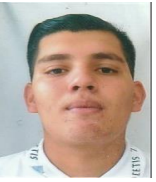

| Nombre: Juan Pedro Gamiño Muñoz. |  |
| Edad: 22 años. | |
| Dirección: Bahía de Tralee #149 Delta 2000. | |
| Télefono celular: 477 86 76 210. | |
Estudios: | |
|
Preescolar: 2003 Plantel: Colegio La Salle Peñitas. | |
|
Primaria: 2006 a 2012 Plantel: Colegio La Salle Peñitas. | |
|
Secundaria: 2012 a 2015 Plantel: Escuela Secundaria General núm. #9 “Francisco Ramírez Mata. | |
|
Preparatoria: 2015 -2018 Plantel: Cetis 77 | |
|
Universidad: 2018- En curso Plantel: Instituto Tecnológico de León. | |
Experiencia: | |
| Mi último empleo fue en la empresa de transporte Travel and Live, en la cual trabaje como
desarrollador web durante un año. Estando en el departamento de sistemas, realice actividades como configuración de impresoras y un poco de soporte técnico, también ponchado de cable UTP. Pero mi mayor tarea era programar el sistema que esta empresa manejaba. Tengo experiencia en ventas, para ser precisos 1 año, trabaje en la empresa color latino, desempeñado la labor de vendedor y encargado de tienda. Trabaje también de auxiliar de sistemas en la empresa llamada trossos de piel, empresa en la cual labore por 3 meses, realizando soporte técnico, cableado estructurado, colocación de cámaras de seguridad y mantenimiento correctivo y preventivo de equipos de cómputo. | |
Habilidades | |
| Como ya mencioné antes, mi fuerte es la programación, en la cual tengo experiencia
programando y conociendo el lenguaje c#, ASP .NET Framework, manejo de SQL Server y lenguaje Transact SQL para el manejo de base de datos, HTML5, CSS3, Javsacript, JQuery, Consumo de WebApi 2, JSON y AJAX. Conocimiento en PHP y Java. |